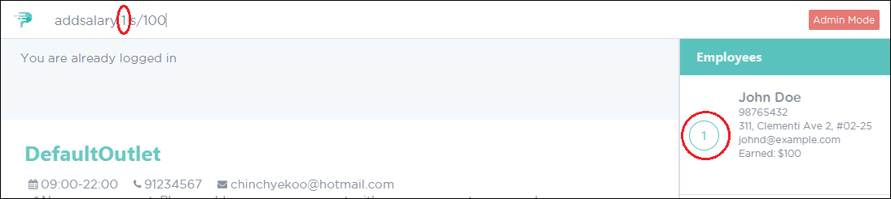
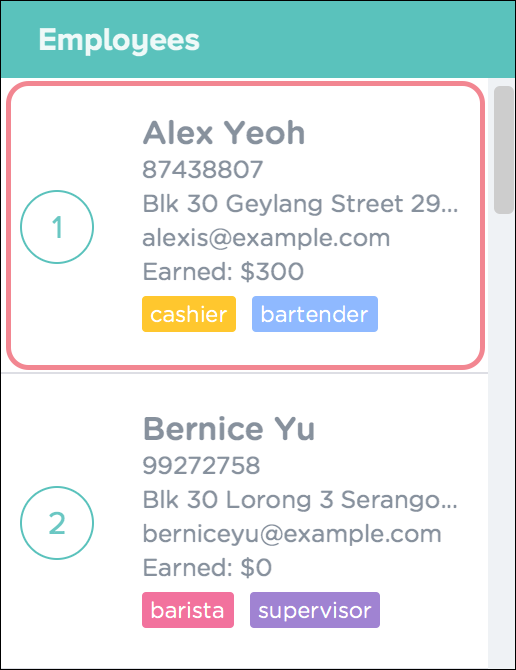
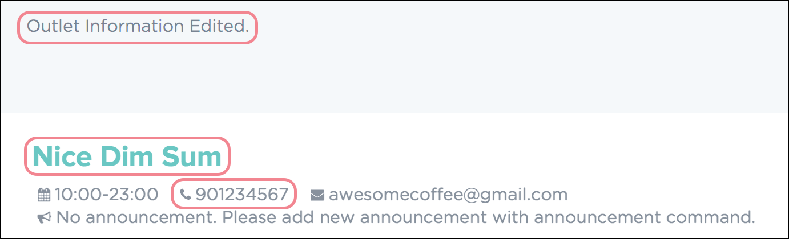
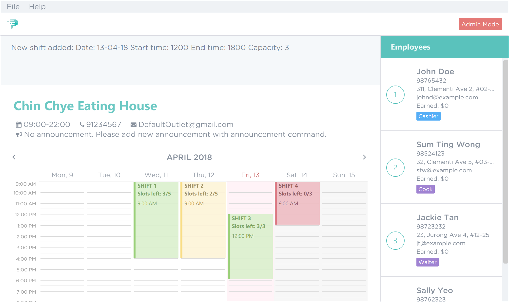
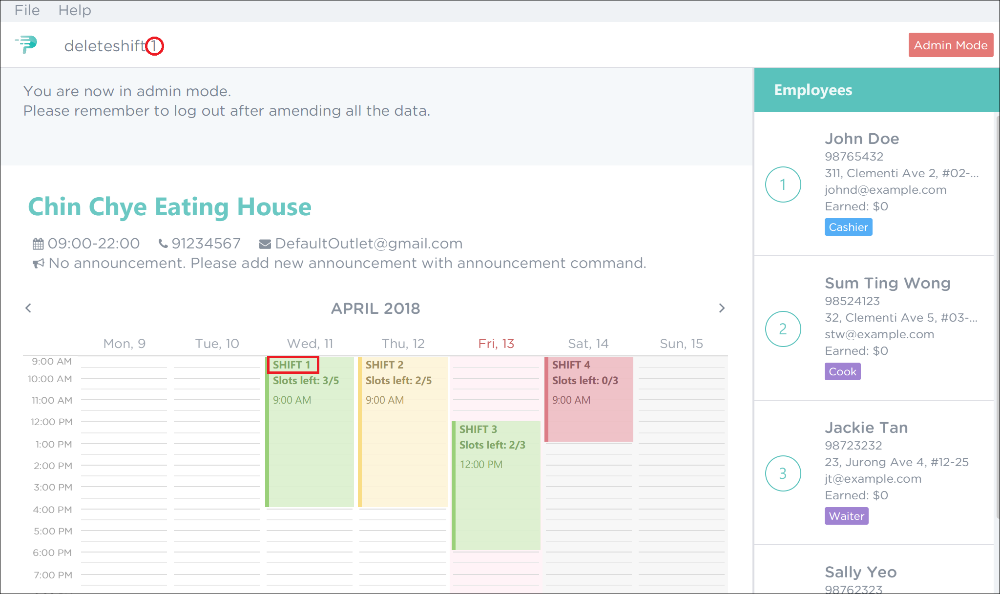
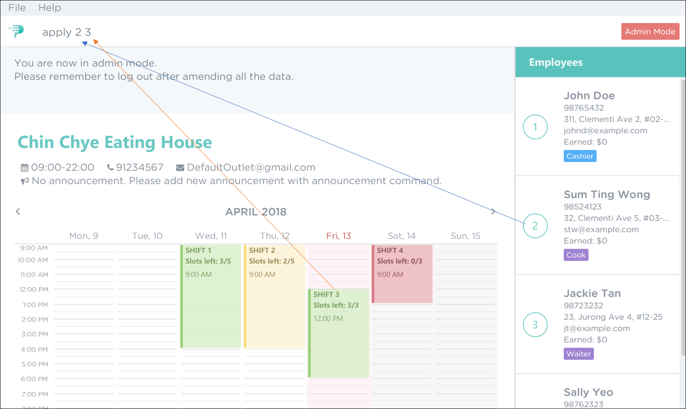
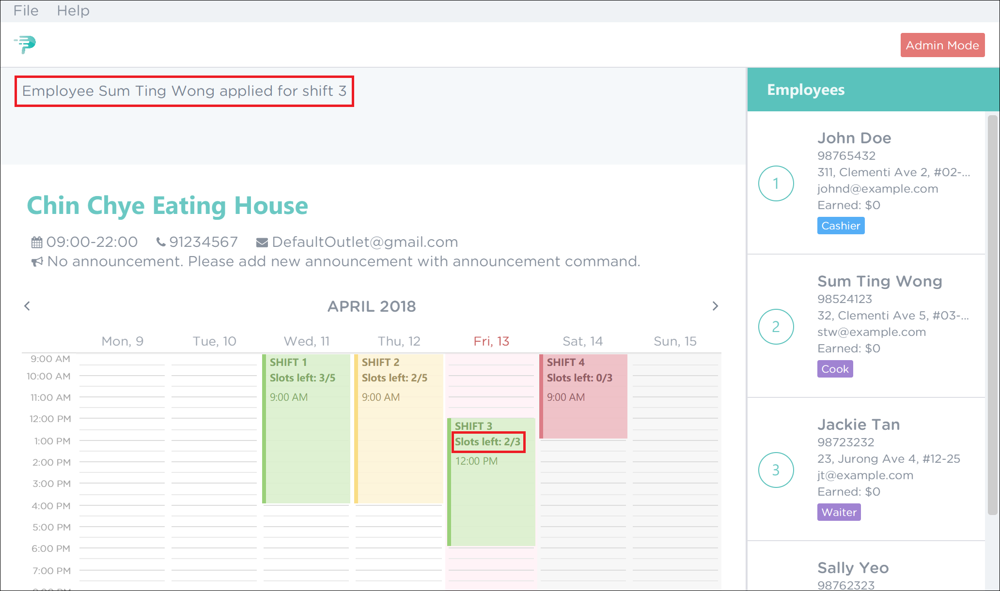
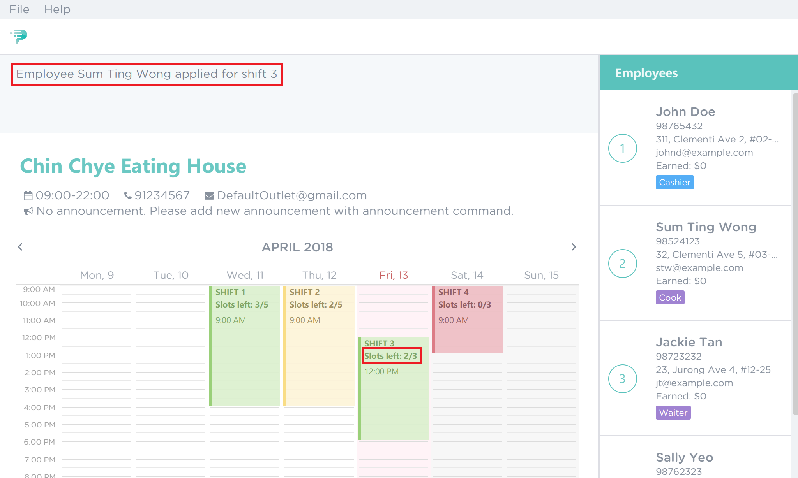
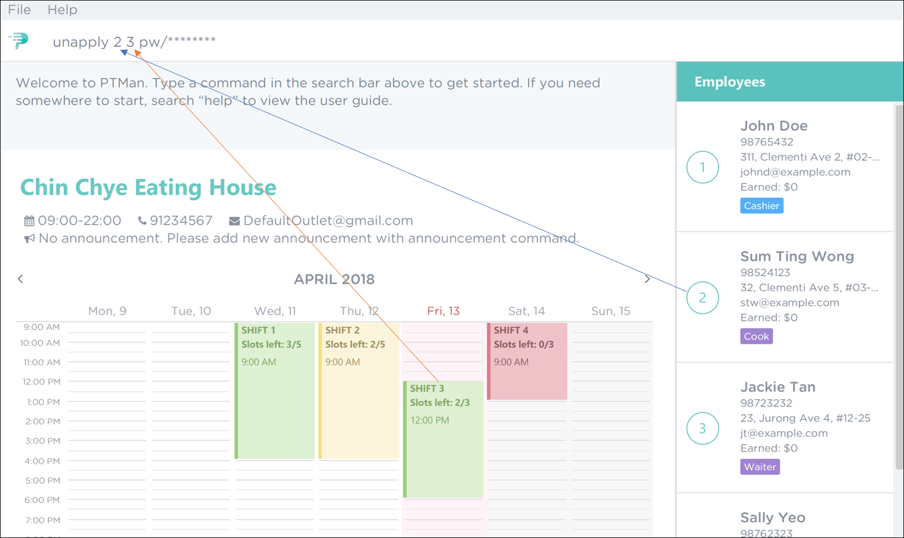
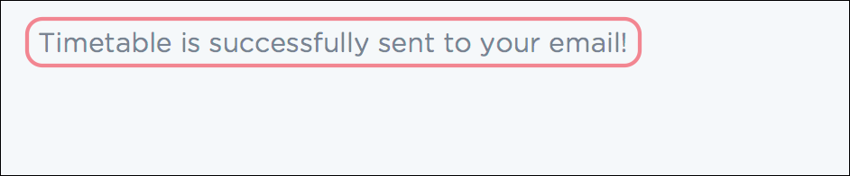

By: W14-B2 Since: March 2018 Licence: MIT
- 1. Introduction
- 2. Quick Start
- 3. Graphical User Interface
- 4. Features
- 5. Commands
- 5.1. Manager Commands
- 5.1.1. Logging in to admin mode:
login - 5.1.2. Logging out of admin mode:
logout - 5.1.3. Changing the admin password:
changeadminpw - 5.1.4. Resetting the admin password:
resetadminpw - 5.1.5. Adding an employee:
add - 5.1.6. Adding salary to an employee:
addsalary - 5.1.7. Editing an employee:
edit - 5.1.8. Deleting an employee :
delete - 5.1.9. Clearing all entries :
clear - 5.1.10. Undoing the previous command :
undo - 5.1.11. Redoing the previously undone command:
redo - 5.1.12. Editing the outlet information:
editoutlet - 5.1.13. Creating an announcement:
announcement - 5.1.14. Encrypting the local storage files:
encrypt - 5.1.15. Decrypting the local storage files:
decrypt - 5.1.16. Viewing encryption status:
viewencrytion - 5.1.17. Adding a shift:
addshift - 5.1.18. Deleting a shift:
deleteshift - 5.1.19. Applying an employee for a shift:
apply - 5.1.20. Removing an employee from a shift:
unapply
- 5.1.1. Logging in to admin mode:
- 5.2. Employee Commands
- 5.3. General Commands
- 5.3.1. Viewing help:
help - 5.3.2. Locating an employee by name:
find - 5.3.3. Listing all employees:
list - 5.3.4. Listing all employees:
viewshift - 5.3.5. Displaying an employee’s shift on the timetable:
select - 5.3.6. Deselecting an employee:
deselect - 5.3.7. Exporting the timetable as image:
export - 5.3.8. Listing entered commands:
history - 5.3.9. Exiting the program:
exit
- 5.3.1. Viewing help:
- 5.1. Manager Commands
- 6. FAQ
- 7. Command Summary
1. Introduction
Part-Time Manager (PTMan) is an application made for companies to manage their part-timers and their respective working schedules.
PTMan allows managers to easily schedule work shifts and keep track of their employees' information.
It also allows the part-timers to have the flexibility of choosing their own working schedules by applying for the available shifts.
The primary mode of interaction with PTMan is via keyboard commands, so if you are a proficient typist, then you will feel right at home using PTMan!
This user guide comes with comprehensive instructions and examples of the various features to help you get started. Sounds great? Jump straight to Quick Start to get started. Enjoy!
2. Quick Start
Here are the steps required to get PTMan up and running on your computer:
-
Ensure you have Java version
1.8.0_60or later installed in your computer.Having any Java 8 version is not enough.
This app will not work with earlier versions of Java 8. -
Download the latest
PTMan.jarhere. -
Copy the file to the folder you want to use as the home folder for PTMan.
-
Double-click the file to start the app. The graphical user interface (GUI) as seen in Figure 1 should appear in a few seconds.
Figure 1. Successful start up window -
Type a command in the command box and press Enter to execute it.
e.g. typinghelpand pressing Enter will open the help window.
| You may refer to Section 5 for more details of the available commands. |
If you are a manager, you have access to admin mode. Admin mode allows you to access all the manager commands.
To prevent unauthorised access, please change your default admin mode password using the changeadminpw command.
You may refer to Section 5.1.3 for instructions on how to do so.
|
3. Graphical User Interface
This section will help you understand the different sections of PTMan’s Graphical User Interface(GUI).
Figure 2 below shows a typical PTMan GUI with its different sections highlighted and labelled.
Following the labels in Figure 2, here are what the different sections are responsible for.
| Label | Name | What it is for |
|---|---|---|
1 |
Command Box |
Allows you to type in your commands into PTMan. |
2 |
Result Display |
Shows the resulting feedback from your most recent command. |
3 |
Outlet Display |
Displays all your outlet details. |
4 |
Timetable Panel |
Displays the weekly timetable containing all the shifts stored in PTMan. |
5 |
Employee List Panel |
Shows a list of all the part-time employees stored in PTMan. |
4. Features
In this section, you will be introduced to the various features of PTMan.
4.1. User Authentication
PTMan has user authentication for both managers and employees to prevent unauthorised execution of commands.
Managers can refer to Section 4.1.1 for admin authentication, while employees can refer to Section 4.1.2 for employee authentication.
4.1.1. Admin mode
For managers, admin mode allows you to access all the manager commands in PTMan. To enter admin mode, please refer to Section 5.1.1.
The default admin password is DEFAULT1.
|
| It is crucial to change the default admin password to prevent unauthorised access to admin mode. You may refer to Section 5.1.3 for instructions on how to do so. |
4.1.2. Employee password
For employees, your employee password identifies you and authorizes you to execute employee commands.
It ensures that you are unable to, for example, apply someone else for a shift without knowing their password.
The default employee password is DEFAULT1.
|
| It is crucial to change the default employee password to prevent unauthorised execution of employee commands. You may refer to Section 5.2.3 for instructions on how to do so. |
4.2. Outlet Management
If you are a manager, PTMan allows you to manage your outlet. You can edit your outlet name, operating hours, contact number and email. The timetable automatically re-sizes according to the operating hours. You can also create announcements to broadcast to your employees. Moreover, PTMan allows you to encrypt and decrypt data stored locally to prevent unauthorised users from interpreting and understanding essential and private data.
If you are an employee, you can view announcements created by your manager and take actions accordingly.
Figure 3 shows the Outlet Display where you can view your outlet information.
4.3. Shift Management
If you are a manager, PTMan allows you to manage your employees' work shifts. You can add shifts, remove shifts and decide which employees are working at each shift. This can significantly reduce your paperwork related to employee scheduling.
If you are an employee, PTMan gives you flexibility in your working hours by allowing you to apply for shifts that you wish to work in.
Shifts that are in PTMan can be viewed via the timetable.
4.4. Timetable
PTMan has a timetable that displays all the shifts in a weekly format. There are many interactions between the timetable and you, as a user, so this section aims to familiarise you with the timetable.
4.4.1. Shift colours
The shifts in PTMan are colour-coded, and here is what the different colours mean:
-
Green: Shift is available with multiple slots left.
-
Yellow: Shift is available, but slots are running out.
-
Red: Shift is no longer available, all slots for the shift have run out.
-
Blue: Shift is taken up by currently selected employee.
-
Brown: Shift is not taken up by currently selected employee.
Figure 4 below shows how the timetable looks like in a sample PTMan app.

PTMan also allows employees to view their own shifts using the select command.
Figure 5 shows how the timetable look like in a sample PTMan app when an employee is selected.

select4.4.2. Timetable navigation
There are two ways to navigate through the different weeks in the timetable:
-
Using Keyboard Shortcuts
-
For Windows:
-
Ctrl + Shift + → : Navigates timetable to the next week.
-
Ctrl + Shift + ← : Navigates timetable to the previous week.
-
Ctrl + Shift + ↓ : Navigates timetable to the current week.
-
-
For Mac:
-
Command + Shift + → : Navigates timetable to the next week.
-
Command + Shift + ← : Navigates timetable to the previous week.
-
Command + Shift + ↓ : Navigates timetable to the current week.
-
-
-
Using Mouse Clicks
-
At the top of the timetable, there is a navigation bar with two arrow buttons which you can click on. These buttons
<and>navigates the timetable to the previous and next week respectively. Figure 6 below shows the navigation bar, with the two arrow buttons circled. Figure 6. Navigation Bar of Timetable
Figure 6. Navigation Bar of Timetable
-
4.5. Saving the Data
All the data is saved in the hard disk automatically upon execution of any command that changes the data. There is no need to manually save your changes.
4.6. Backing Up the Data
Backup files are automatically created and saved in the hard disk upon exiting the app. There is no need to do backup manually.
Following these steps, you can replace your corrupted local storage files with the backup files:
-
Copy the backup files named
outletinformation.xml.backupandparttimemanager.xml.backup. -
Open the folder where you store
PTMan.jar. -
Open the
datafolder. -
Paste your copied backup files in this
datafolder. -
Rename
outletinformation.xml.backuptooutletinformation.xml. -
Rename
parttimemanager.xml.backuptoparttimemanager.xml. -
Run the app
PTMan.jarand you will see all the restored data read from backup files.
4.7. Keeping Track of Employees' Monthly Salaries [Coming in v2.0]
If you are a manager, PTMan will help you keep track of your employees' monthly salaries. PTMan do so by calculating the number of hours each employee has worked based on the shifts that they applied for throughout the month.
4.8. Saving Data to the Cloud [Coming in v2.0]
Currently, PTMan is meant to be used on a single shared device as it is limited by local storage. By saving PTMan’s data to the cloud, both employees and managers can access PTMan from their own devices since data can now be shared.
5. Commands
The main method of user interaction with PTMan is via keyboard commands.
Commands are split into 3 sub-sections, Manager Commands, Employee Commands, and General Commands.
Take note that for this user guide, our commands will follow the format as stated below.
Command Format
-
Words in
UPPER_CASEare the parameters to be supplied by the user.
e.g. Inadd n/NAME,NAMEis a parameter which can be used asadd n/John Doe. -
Items in square brackets are optional.
e.gn/NAME [t/TAG]can be used asn/John Doe t/friendor asn/John Doe. -
Items with
… after them can be used multiple times, or none at all.
e.g.[t/TAG]…can be used ast/friend,t/friend t/familyetc. -
Parameters can be in any order.
e.g. if the command specifiesn/NAME p/PHONE_NUMBER, thenp/PHONE_NUMBER n/NAMEis also acceptable. -
For your convenience, many commands have a shorthand.
eg.listandlwill both show a list of all employees in PTMan.
5.1. Manager Commands
As a manager, you are able to access all commands in this section in addition to the general commands. These manager commands require prior logging in to admin mode as shown in Section 5.1.1.
5.1.1. Logging in to admin mode: login
Logs in to admin mode, allowing you to use all the manager commands.
Format: login pw/ADMIN_PASSWORD
|
Please remember to logout after you are done making changes.
This is to prevent unauthorised access to manager commands. Refer to Section 5.1.2 for more information. |
Guided Example:


5.1.2. Logging out of admin mode: logout
Logs out of admin mode, preventing further usage of manager commands.
Format: logout
Guided Example:


5.1.3. Changing the admin password: changeadminpw
Changes the password to enter admin mode.
Format: changeadminpw pw/CURRENT_PASSWORD pw/NEW_PASSWORD pw/CONFIRM_NEW_PASSWORD
Shorthand: cap pw/CURRENT_PASSWORD pw/NEW_PASSWORD pw/CONFIRM_NEW_PASSWORD
| To prevent unauthorised access to admin mode, managers should change the admin password when running PTMan for the first time. |
|
The password should be at least 8 characters long. You must key in the current and new password in the correct sequence as given in the format. |
Guided Example:
-
To change the password from
DEFAULT1tohunter22, type:changeadminpw pw/DEFAULT1 pw/hunter22 pw/hunter22. The passwords will be masked by asterisks as shown in Figure 11.Figure 11. Changing Admin Password in PTMan -
After the password is successfully changed, a confirmation message will be displayed in the result display as seen in Figure 12.
 Figure 12. Admin Password Successfully Changed in PTMan
Figure 12. Admin Password Successfully Changed in PTMan
5.1.4. Resetting the admin password: resetadminpw
Resets the password to enter admin mode and sends a randomly generated password to the outlet’s email address.
You may use the new password to login and change to your preferred password.
Format: resetadminpw
Shorthand: rap
| The randomly generated password will be sent to the outlet’s email address stored in PTMan. You can view this email address under the outlet display of the GUI. |
Guided Example:

5.1.5. Adding an employee: add
Adds an employee to PTMan.
Format: add n/NAME p/PHONE_NUMBER e/EMAIL a/ADDRESS s/SALARY [t/TAG]…
Shorthand: a n/NAME p/PHONE_NUMBER e/EMAIL a/ADDRESS s/SALARY [t/TAG]…
| An employee can have any number of tags (including 0) |
Guided Example:
-
To add an employee into PTMan, key in the following as illustrated in Figure 15.
 Figure 15. Adding an Employee into PTMan
Figure 15. Adding an Employee into PTMan -
Upon successful addition of the employee, you will see a confirmation message in the result display, and the employee being added into your Employee list. Figure 16 shows how PTMan should look like after the above command.
Figure 16. Successful Addition of Employee into PTMan
5.1.6. Adding salary to an employee: addsalary
Adds a specified amount to an employee’s salary.
Format: addsalary EMPLOYEE_INDEX s/AMOUNT_TO_ADD
Shorthand: adds EMPLOYEE_INDEX s/AMOUNT_TO_ADD
Guided Example:
-
To increase the first employee’s salary by $100, key in the command as shown below in Figure 17.
Figure 17. Adding Salary for Employee in PTMan -
Upon successful execution of the command, you will see a confirmation message in the result display and the applied salary as shown in Figure 18.
 Figure 18. Successful Addition of Salary for Employee in PTMan
Figure 18. Successful Addition of Salary for Employee in PTMan
| Employee’s salary cannot be deducted using this command. |
5.1.7. Editing an employee: edit
Edits an existing employee in PTMan.
Format: edit EMPLOYEE_INDEX [n/NAME] [p/PHONE] [e/EMAIL] [a/ADDRESS] [s/SALARY] [t/TAG]…
Shorthand: e EMPLOYEE_INDEX [n/NAME] [p/PHONE] [e/EMAIL] [a/ADDRESS] [s/SALARY] [t/TAG]…
|
An employee’s password can only be edited by the employee. |
Guided Example:
-
To edit the first employee’s email and tags, key in the following as illustrated in Figure 19.
Figure 19. Editing Employee Details in PTMan -
Upon successful execution of the command, you will see a confirmation message in the result display, and the edited details of the employee as shown in Figure 20.
Figure 20. Successful Edit of Employee Details in PTMan
More Examples:
-
To edit the phone number and email address of the employee
1to be91234567andjohndoe@example.comrespectively, type:
edit 1 p/91234567 e/johndoe@example.com -
To edit the name of the employee
2to beBetsy Crowerand clear all existing tags, type:
edit 2 n/Betsy Crower t/
5.1.8. Deleting an employee : delete
Deletes the specified employee from PTMan.
Format: delete EMPLOYEE_INDEX
Shorthand: d EMPLOYEE_INDEX
Guided Example:
-
To delete the first employee from PTMan, key in the following as illustrated in Figure 21.
Figure 21. Editing Employee Details in PTMan -
Figure 22 shows the employee list panel before the
deletecommand is carried out.Figure 22. Editing Employee Details in PTMan -
Upon successful deletion, you will see a confirmation message in the result display and the employee being deleted from the employee list panel as shown in Figure 23.
Figure 23. Successful Edit of Employee Details in PTMan
More Examples:
5.1.9. Clearing all entries : clear
Clears all shifts and employees from PTMan.
Format: clear
Shorthand: c
You may use the undo command if you have accidentally cleared all shifts and employees.Please refer to Section 5.1.10 for more information. |
5.1.10. Undoing the previous command : undo
Restores PTMan to the state before the previous undoable command was executed.
Format: undo
Shorthand: u
|
Undoable commands: Commands that modify PTMan’s data ( |
Examples:
-
delete 1
undo(reverses thedelete 1command) -
list
undo
Theundocommand fails as there are no undoable commands executed previously. -
delete 1
clear
undo(reverses theclearcommand)
undo(reverses thedelete 1command)
5.1.11. Redoing the previously undone command: redo
Reverses the most recent undo command.
Format: redo
Shorthand: r
Examples:
-
delete 1
undo(reverses thedelete 1command)
redo(reapplies thedelete 1command) -
delete 1
redo
Theredocommand fails as there are noundocommands executed previously. -
delete 1 pw/ADMIN_PASSWORD
clear
undo(reverses theclearcommand)
undo(reverses thedelete 1command)
redo(reapplies thedelete 1command)
redo(reapplies theclearcommand)
5.1.12. Editing the outlet information: editoutlet
Edits the outlet information.
Format: editoutlet n/OUTLET_NAME h/OPERATING_HOURS c/CONTACT_NUMBER e/EMAIL
Shorthand: eo n/OUTLET_NAME h/OPERATING_HOURS c/CONTACT_NUMBER e/EMAIL
| Ensure that the outlet email is valid as it will be used to reset the admin password should you forget it. |
Guided Example:
-
To edit the name, operating hours, contact number, and email of the outlet, key in the following as shown in Figure 24.
 Figure 24. Editing Outlet Information in PTMan
Figure 24. Editing Outlet Information in PTMan -
Upon successful execution of the command, you would see a confirmation message below the command bar, and the changes applied to the outlet information. Figure 25 shows how PTMan should look like after the above command.
 Figure 25. Successful Edit of Outlet Information in PTMan
Figure 25. Successful Edit of Outlet Information in PTMan -
To edit only the name and contact number, key in the following as shown in Figure 26
Figure 26. Editing Selective Outlet Information in PTMan -
Upon successful execution of the command, a confirmation message will be displayed in the result display, and changes will be applied to the outlet information. Figure 27 shows how PTMan should look like after the above command.
Figure 27. Successful Edit of Selective Outlet Information in PTMan
5.1.13. Creating an announcement: announcement
Sets an announcement for the outlet.
Format: announcement ANNOUNCEMENT_MESSAGE
Shorthand: announce
Guided Example:
-
To make an announcement in PTMan, type the following command as illustrated in Figure 28.
 Figure 28. Making an Announcement in PTMan
Figure 28. Making an Announcement in PTMan -
When a successful announcement is made, a confirmation message will be displayed in the result display, and the changes will be applied to the announcement. Figure 29 shows how PTMan should look like after the above command.
 Figure 29. Successful Announcement Made in PTMan
Figure 29. Successful Announcement Made in PTMan
5.1.14. Encrypting the local storage files: encrypt
Encrypts data stored in the files of the data folder.
Format: encrypt
Guided Example:
-
After your
encryptcommand is executed successfully, a confirmation message will be displayed in the result display as shown in Figure 30.Figure 30. Successful Encryption of Local Files in PTManYou can view your data stored in local files with the following steps:
-
Open the folder where your app
PTMan.jaris at. -
Open the folder named
data. You will see two filesoutletinformation.xmlandparttimemanager.xmlthere. -
Open
outletinformation.xmlwith Internet Explorer (IE) or your favourite editor. The third line of the file indicates the encryption status with reference to Figure 31.
-
-
Figure 31 shows an example of what the
outletinformation.xmlfile should look like when theencryptcommand is successfully executed. Figure 31. Example of an Encrypted
Figure 31. Example of an Encryptedoutletinformation.xmlFile
5.1.15. Decrypting the local storage files: decrypt
Decrypts data stored in the files in data folder.
Format: decrypt
Guided Example:
-
After your
decryptcommand is executed successfully, a confirmation message will be displayed in the result display as shown in Figure 32.Figure 32. Successful Decryption of Local Files in PTMan -
Open
outletinformation.xmlfile again, now you can read and understand the data stored as shown in Figure 33. Figure 33. Example of a Decrypted
Figure 33. Example of a Decryptedoutletinformation.xmlFile
5.1.16. Viewing encryption status: viewencrytion
Shows encryption status of local storage files.
Format: viewencryption
Shorthand: ve
Guided Example:
-
After your
viewencryptioncommand is executed successfully, the encryption status will be displayed in the result display as shown in Figure 34. Figure 34. Encryption Status Shown in PTMan
Figure 34. Encryption Status Shown in PTMan
5.1.17. Adding a shift: addshift
Adds a shift to the timetable to indicate that you require employees at that period.
Format: addshift d/DATE ts/START_TIME te/END_TIME c/EMPLOYEE_CAPACITY
Shorthand: as d/DATE ts/START_TIME te/END_TIME c/EMPLOYEE_CAPACITY
Guided Example:
-
To add a shift on 13th April 2018 from 12pm to 6pm that requires 3 employees, execute the command
addshift d/13-04-18 ts/1200 te/1800 c/3as shown in Figure 35.Figure 35. Adding a Shift -
You should see a confirmation message in the result display along with the shift you’ve added being displayed in the timetable. This is illustrated in Figure 36.
Figure 36. Successful Adding of a Shift
5.1.18. Deleting a shift: deleteshift
Deletes a shift from the timetable.
Format: deleteshift SHIFT_INDEX
Shorthand: ds
Guided Example:
-
If you wish to delete shift 1, execute the command
deleteshift 1as shown in Figure 37 below.Figure 37. Deleting Shift 1 -
Upon successful deletion, you will see a confirmation message in the result display and you can no longer see the shift in the timetable. Figure 38 illustrates the successful deletion of shift 1.
 Figure 38. Successful Deletion of Shift 1
Figure 38. Successful Deletion of Shift 1
5.1.19. Applying an employee for a shift: apply
Applies an employee for a shift.
Format: apply EMPLOYEE_INDEX SHIFT_INDEX
Shorthand: ap EMPLOYEE_INDEX SHIFT_INDEX
Guided Example:
-
To apply Sum Ting Wong for shift 3, execute the command
apply 2 3as shown in Figure 39 below.Figure 39. Applying Employee 2 to Shift 3 -
As highlighted by the red boxes in Figure 40, you should see a confirmation message in the result display and the slots left in the shift will decrease by 1 upon successful application.
Figure 40. Successful Application of Employee 2 to Shift 3
If you have accidentally applied the employee for the wrong shift, you may use the unapply command.Refer to Section 5.1.20 for more information. |
5.1.20. Removing an employee from a shift: unapply
Removes an employee from a shift.
Format: unapply EMPLOYEE_INDEX SHIFT_INDEX
Shorthand: uap EMPLOYEE_INDEX SHIFT_INDEX
Guided Example:
-
To remove Sum Ting Wong from shift 3, execute the command
unapply 2 3as shown in Figure 41 below. Figure 41. Removing Employee 2 from Shift 3
Figure 41. Removing Employee 2 from Shift 3 -
As highlighted by the red boxes in Figure 42, you should see a confirmation message in the result display and the slots left in the shift will increase by 1 upon successful removal.
 Figure 42. Successful Removal of Employee 2 from Shift 3
Figure 42. Successful Removal of Employee 2 from Shift 3
5.2. Employee Commands
As an employee, you are able to access these commands in addition to the general commands. These employee commands require the use of your employee password.
5.2.1. Applying for a shift: apply
Applies for a shift.
Format: apply EMPLOYEE_INDEX SHIFT_INDEX pw/PASSWORD
Shorthand: ap
Guided Example:
-
If you are Sum Ting Wong and you wish to apply for shift 3, execute the command
apply 2 3 pw/YOUR_PASSWORDas shown in Figure 43 below. Figure 43. Applying Employee 2 to Shift 3
Figure 43. Applying Employee 2 to Shift 3 -
As highlighted by the red boxes in Figure 44, you should see a confirmation message in the result display and the slots left in the shift will decrease by 1 upon successful application.
Figure 44. Successful Application of Employee 2 to Shift 3
If you have accidentally applied for the wrong shift, you may use the unapply command.Refer to Section 5.2.2 for more information. |
5.2.2. Removing yourself from a shift: unapply
Removes youreself from a shift.
Format: unapply EMPLOYEE_INDEX SHIFT_INDEX pw/PASSWORD
Shorthand: uap EMPLOYEE_INDEX SHIFT_INDEX pw/PASSWORD
Guided Example:
-
If you are Sum Ting Wong and you wish to remove yourself from shift 3, execute the command
unapply 2 3 pw/YOUR_PASSWORDas shown in Figure 45 below.Figure 45. Removing Employee 2 from Shift 3 -
As highlighted by the red boxes in Figure 46, you should see a confirmation message in the result display and the slots left in the shift will increase by 1 upon successful removal.
 Figure 46. Excpected Outcome After Applying Employee 2 to Shift 3
Figure 46. Excpected Outcome After Applying Employee 2 to Shift 3
5.2.3. Changing your employee password: changepw
Changes your employee password.
For security purposes, you are highly encouraged to change your password once your manager creates your account.
Format: changepw EMPLOYEE_INDEX pw/CURRENT_PASSWORD pw/NEW_PASSWORD pw/CONFIRM_NEW_PASSWORD
Shorthand: cp EMPLOYEE_INDEX pw/CURRENT_PASSWORD pw/NEW_PASSWORD pw/CONFIRM_NEW_PASSWORD
Guided Example:
-
If you are Asther toh, you can execute the command as shown in Figure 47.
 Figure 47. Changing Employee Password in PTMan
Figure 47. Changing Employee Password in PTMan -
Upon successful execution of
changepw, a confirmation message will be displayed in the result display as shown in Figure 48. Figure 48. Successful Change of Employee Password in PTMan
Figure 48. Successful Change of Employee Password in PTMan
|
The password should be at least 8 characters long. The sequence of current and new password entered must be of the format. |
More Examples:
-
If your index is
5, your current password isDEFAULT1, and you wish to change it tohunter22, type:
cp 5 pw/DEFAULT1 pw/hunter22 pw/hunter22
5.2.4. Resetting your employee password: resetpw
Resets your employee password. This sends a temporary password to your email address. You can use this command if you have forgotten your password.
Format: resetpw EMPLOYEE_INDEX
Shorthand: rp EMPLOYEE_INDEX
Guided Example:
-
To reset your password, execute the command with your
EMPLOYEE_INDEX, as illustrated in Figure 49. Figure 49. Resetting Employee Password in PTMan
Figure 49. Resetting Employee Password in PTMan
-
After executing
resetpw, a temporary password will be sent to the email address that your manager has registered you with. Figure 50 shows what you should see after executing the command.Figure 50. Successful Reset of Employee Password in PTMan
| Temporary password should be changed immediately after resetting. |
5.3. General Commands
These commands can be executed by both employees and managers.
5.3.1. Viewing help: help
Opens this user guide in another window.
Format: help
|
Alternatively, you can find the help option by pressing F1 or from the menu bar, as shown in Figure 51. Figure 51. Accessing the Help Option From the Menu Bar
|
5.3.2. Locating an employee by name: find
Finds employees whose names contain any of the given keywords.
Format: find KEYWORD [MORE_KEYWORDS]
Shorthand: f KEYWORD [MORE_KEYWORDS]
Examples:
-
To find employees
johnandJohn Doe, type:
find John -
To find any employee having names
Betsy,Tim, orJohn, type:
find Betsy Tim John
5.3.3. Listing all employees: list
Shows a list of all employees in PTMan.
Format: list
Shorthand: l
5.3.4. Listing all employees: viewshift
Shows a list of all employees who have applied for the specified shift index in PTMan.
Format: viewshift SHIFT_INDEX
Shorthand: vs SHIFT_INDEX
To stop displaying the employees of the specified shift, use the list command.
|
Guided Example:
-
To view all employees in the second shift, key in the following as illustrated in Figure 52.
Figure 52. Viewing Employees in Shift 2 -
Upon successful execution of the command, you will see a confirmation message in the result display, and the employees listed in the employee list panel as shown in Figure 53.
Figure 53. Successful Edit of Employee Details in PTMan
5.3.5. Displaying an employee’s shift on the timetable: select
Displays the shifts of the selected employee on the timetable view. Shifts applied by the selected employee would be displayed
in blue, while the other shifts would be displayed in brown.
Format: select EMPLOYEE_INDEX
Shorthand: sel EMPLOYEE_INDEX
| Alternatively, you can select an employee by clicking on the employee’s card in the employee list. |
To stop displaying the employee’s shifts on the timetable, use the deselect command. |
Guided Example:
-
To highlight shifts applied by the third employee, key in the following as illustrated in Figure 54.
Figure 54. Selecting Employee to Highlight Applied ShiftsFigure 4 shows how the timetable looks like prior to the
selectcommand.
Figure 55. Initial Timetable Before Selection of Employee -
Upon successful execution of the command, you will see a confirmation message in the result display, and the shifts highlighted in the timetable as shown in Figure 56.
Figure 56. Successful Selection of Employee with Shifts Highlighted
More Examples:
-
To select the employee
1in the results of thefindcommand and display their shifts in the timetable, type:
find Betsy
select 1
5.3.6. Deselecting an employee: deselect
Displays the timetable without any employee selected.
Useful for users to navigate back to the default timetable after using the select command.
Format: deselect
Shorthand: dsel
5.3.7. Exporting the timetable as image: export
Exports the current timetable displayed as an image and either saves it locally into the location for your jar file,
or emails the exported timetable to the input email address.
Format: export [e/EMAIL]
Shorthand: exp [e/EMAIL]
Guided Example:
-
To export the timetable and email it to yourself, key in the following as illustrated in Figure 57.
 Figure 57. Exporting Timetable to Email
Figure 57. Exporting Timetable to Email -
Upon successful execution of the command, you will see a confirmation message in the result display as shown in Figure 58.
Figure 58. Successful Export of Timetable to EmailAn email will also be sent to you as show in Figure 59.
Figure 59. Successful Selection of Employee with Shifts Highlighted
More Examples:
-
To export the current timetable in PTMan, type:
export -
To export the timetable with the shifts of employee
1in PTMan, type:
select 1
export -
To export the timetable with the shifts of employee
1in PTMan and send the exported timetable as email, type:
select 1
export e/email@example.com
5.3.8. Listing entered commands: history
Lists all the commands that you have entered in reverse chronological order.
Format: history
Shorthand: h
|
Pressing the ↑ and ↓ arrows will display the previous and next input respectively in the command box. |
6. FAQ
Q: How do I transfer my data to another computer?
A: Install the app in the other computer and overwrite the empty data file it creates with the file that contains the data of your previous PTMan folder.
7. Command Summary
7.1. Shared Commands
-
Help:
help -
Find:
find KEYWORD [MORE_KEYWORDS] -
List:
list -
View shift:
viewshift SHIFT_INDEX -
Display employee’s shifts:
select EMPLOYEE_INDEX -
Stop displaying employee’s shifts:
deselect -
Export timetable:
export -
History:
history -
Exit:
exit
7.2. Manager Commands
7.2.1. Admin management
-
Login:
login pw/PASSWORD -
Logout:
logout -
Change admin password:
cappw/CURRENT_PASSWORD pw/NEW_PASSWORD pw/CONFIRM_NEW_PASSWORD -
Reset admin password:
rap
7.2.3. Outlet management
-
Edit outlet information:
editoutlet n/NAME h/OPERATING_HOURS c/CONTACT_NUMBER e/EMAIL -
Create announcement:
announcement ANNOUNCEMENT_MESSAGE
7.2.4. Shift management
-
Add shift:
addshift d/DATE ts/TIME_START te/TIME_END c/CAPACITY -
Delete shift:
deleteshift SHIFT_INDEX -
Apply:
apply EMPLOYEE_INDEX SHIFT_INDEX -
Unapply:
unapply EMPLOYEE_INDEX SHIFT_INDEX
7.2.5. Storage management
-
Encrypt storage files:
encrypt -
Decrypt storage files:
encrypt
7.3. Employee Commands
7.3.2. Password management
-
Change password:
cp EMPLOYEE_INDEX pw/CURRENT_PASSWORD pw/NEW_PASSWORD pw/CONFIRM_NEW_PASSWORD -
Reset password:
rp EMPLOYEE_INDEX